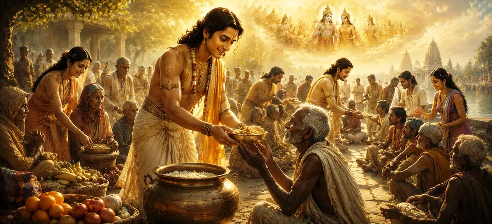

The Greatness of Charity
Moving seamlessly from the intellectual and spiritual elevation found in scriptural study, Chapter 14 of Uma Samhita enters the practical realm of ethics through Dana Mahatmya—the majestic glory of charity. In the vast teachings of the Shiva Purana, knowledge that does not translate into active compassion and selfless sharing remains incomplete. True spiritual awakening inevitably overflows as unconditional love and material or spiritual sustenance for those in need.
This chapter explores how giving breaks the rigid chains of egoism and possessiveness. By practicing righteous charity (Dana), human beings harmonize their personal resources with the divine rhythm of cosmic circulation, recognizing that all wealth ultimately belongs to the Supreme Lord and is entrusted to individuals merely as stewards of creation.
Core Dimensions of Righteous Giving
Dissolving Egoism
Shatters the illusion of exclusive ownership and melts hardened selfishness.
Providing Sustenance (Anna Dana)
Heralds food offering as the highest vital support, sustaining physical existence.
Sharing Wisdom (Vidya Dana)
Illuminates minds by imparting spiritual and practical education to seekers.
Offering Refuge (Abhaya Dana)
Protects the vulnerable from fear, danger, and distress with absolute courage.
Balancing Karma
Neutralizes past karmic friction and generates immense spiritual merit (Punya).
Reflecting Divine Grace
Mirrors the boundless, unconditional generosity of Lord Shiva toward creation.
Core Topics in This Text
- 01 The Metaphysical Philosophy of Dana →
- 02 Classification and Forms of Righteous Giving →
- 03 The Dispositions and Attitude of a True Donor →
- 04 Karmic Purification and Spiritual Rewards →
- 05 Worshipping Lord Shiva Through Humanitarian Service →
- 06 Transitioning from Moral Ethics to Cosmic Geography →
The Metaphysical Philosophy of Dana
In this foundational section, the Shiva Purana explains that holding tightly to material accumulations fosters spiritual stagnation. The act of *Dana* (charity) is presented not merely as a social duty or philanthropic obligation, but as an essential spiritual discipline designed to break the psychological knots of attachment.
When an individual learns to release resources gracefully for the welfare of others, they realize that material abundance flows through the universe like water in a stream. Stagnation breeds corruption and illusion, whereas continuous circulation maintains purity, harmony, and grace.
Classification and Forms of Righteous Giving
The text outlines several distinct tiers of charity, emphasizing that the value of a gift lies not in its monetary price tag, but in the sincerity of the giver and the real need of the recipient. Among these, *Anna Dana* (the offering of food to the hungry) holds a peerless position because food is the primary sustainer of life.
Other exalted forms include *Vidya Dana* (sharing spiritual and secular knowledge to dispel darkness), *Aushadha Dana* (providing medicines to heal the sick), and *Abhaya Dana* (granting fearlessness and protection to those facing danger). Each form targets a specific dimension of human suffering, uplifting society systematically.
The Dispositions and Attitude of a True Donor
Chapter 14 explicitly cautions against giving driven by pride, ego, expectation of public applause, or ulterior motives. True charity (*Satvik Dana*) must be performed with profound humility, reverence for the recipient, and absolute absence of arrogance or regret.
The text notes that when charity is offered with a pure heart—treating the recipient not as an inferior petitioner, but as a living vessel of the Divine—the action transforms into an act of direct worship, bridging the gap between humanity and heaven.
Karmic Purification and Spiritual Rewards
The scripture details the profound karmic benefits accrued by practitioners of righteous charity. While material wealth remains transient and subject to decay, the spiritual merit (*Punya*) generated through selfless giving clings to the soul as an imperishable asset across lifetimes.
This accumulated merit lightens karmic burdens, pacifies disruptive planetary influences, and clears the inner mental obstructions that prevent deep meditation, ultimately paving a smooth pathway toward spiritual liberation and union with Lord Shiva.
Worshipping Lord Shiva Through Humanitarian Service
A central teaching emphasized in this chapter is that Lord Shiva resides within all living beings as the inner soul (*Atman*). Therefore, serving humanity through active compassion, feeding the hungry, and uplifting the distressed is equivalent to performing grand ritual worship to the Supreme Lord.
Ritual worship without a compassionate heart remains sterile. When external temple devotion blends seamlessly with active social charity and love for all creatures, the spiritual practice attains supreme perfection and unshakeable grace.
Transitioning from Moral Ethics to Cosmic Geography
Having established the supreme importance of ethical giving, compassionate living, and karmic purification, Uma Samhita prepares to expand its lens toward the vast macrocosm. The text bridges human moral conduct with the structural architecture of the universe itself.
This lays the groundwork for the next exploration, leading directly into **The Netherworlds of Patala**, where the scripture traverses the subterranean realms of existence, detailing their divine order, luminous subterranean cities, and cosmic significance.
Spiritual Insight
Chapter 14 teaches us that true devotion is measured not merely by what we hold in prayer, but by what we share in compassion. By practicing selfless charity and treating every living being as a temple of Lord Shiva, we dissolve our inner limitations and awaken divine abundance within our own hearts.
Frequently Asked Questions
① Why is charity considered a supreme duty in Sanatana Dharma?
Charity (Dana) dissolves egoistic attachment to wealth, expresses active compassion for all creation, and harmonizes human karma with universal abundance.
② What are the different forms of giving emphasized in the Puranas?
Sacred texts categorize charity into giving food (Anna Dana), sharing knowledge (Vidya Dana), protecting life (Abhaya Dana), and offering essential resources to those in need.
③ How does selfless giving transform the consciousness of the giver?
It purifies the heart of greed, cultivates non-possessiveness (Aparigraha), and aligns the individual will with the boundless grace of Lord Shiva.